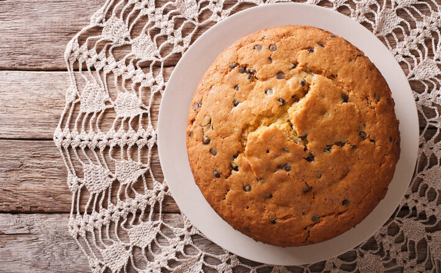

descriçao:
extremamente cremoso, derrete na boca, sem aquela textura de textura de gelatina que encontramos na maioria dos pudins.
Para ficar perfeito, a calda de caramelo que escorre pelo pudim dá o toque final a esta maravilhosa receita
ingredientes
- 2 xícaras de chá de farinha
- 2 xícaras de chá de açúcar
- 1 colher de sopa de fermento em pó
- 3 ovos
- 1/2 xícara de chá de óleo
- 1 xícara de chá de leite
- 1/2 pacotinho de 100 g de chocolate granulado
modo de preparo
- Coloque em uma vasilha a farinha, o açúcar e o fermento e mexa.
- Adicione os ovos, o óleo, o leite e mexa tudo.
- Adicione o chocolate granulado e mexa.
- Leve ao forno em uma forma untada e enfarinhada por aproximadamente 25 minutos no forno médio.